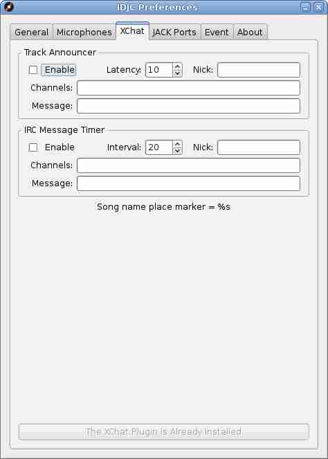
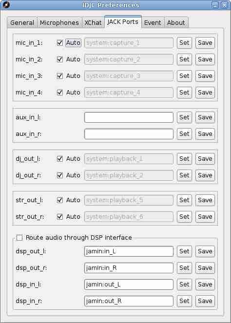

The preferences window is easily the window most in need of documentation, so here it is:
The Feature Set frame allows you to set the amount of window space to a minimum. It also minimises CPU usage by doing practically no audio mixing. You get just one player, no crossfader or microphone when you choose the Basic Streamer option. Choosing Start Mini will cause IDJC to be in that state automatically when the application is started.
The Meters frame contains options for saving screen space by allowing you to remove sound level meters from the main application window.
The Replay Gain section deals with how Replay Gain is handled. Consider using this in preference to the Stream Normalizer
The Miscellaneous Features frame is where you can turn on or off some of the optional features of IDJC of which I will mention, the DJ Alarm which causes an audible beep to the DJ but not the listeners whenever the music is about to come to an end.
A Stream Normalizer is provided to help even out the sound level between differing audio sources.
There is an adjustment for the DJ audio level which affects sound to the headphones only and to the right of that a setting for the Player Resample Quality. What this does is allow you to set a sound resampling audio quality which does not overload your CPU.
IDJC provides the ability to connect to a Prokyon 3 song title database. When connected a pane appears in the left hand side of the main application window and tracks can be dragged from there into either of the playlists.
The Player Settings At Startup frame is where you can set which playlist mode or player button settings you prefer that will survive an application restart.
Here you can set various controls that affect the microphone audio and others that control the look and behaviour of the open buttons in the main window. I recommend using the record feature to get a clear impression of what your audio is sounding like. Note that unprocessed audio goes to the DJ audio mix in mono because it's less distracting.
The XChat feature works in conjunction with the XChat plugin, which has an automatic install button here. Track announcements and timed messages are only issued when you are actually streaming.
The Track Announcer sends a new message whenever the song changes.
Latency is the estimated latency in seconds of the server. Servers like to buffer lots of data so that they can supply a steady stream of audio to the listeners despite the poor connection the DJ may have to the server and the listeners own media players like to do the same. Unfortunately this introduces latency that can be upto around 15 seconds. Without the latency setting in XChat your announcements could be happening 15 seconds before the listeners hear your song. Set this number so that your announcements coincide as well as possible to when the listeners actually start hearing your song.
Nick needs to match the nick you are logged in as. This is a precaution for just in case you are logged in under two different nicks. Without this precaution you would end up announcing the track twice or once under an unintended nick.
The Message can consist of placeholders like %s for the song you are playing. A full list of valid placeholders is shown to help you.
Channels is a list of channels in a comma separated list that you want to send your message to.
IRC Message Timer will send a new message every so many minutes.
Interval is the amount of time in minutes between messages.
IDJC uses Jack Audio Connection Kit for its audio. The boxes provided for you are for the entering of port names for IDJC to bind to. Naturally the connections between the IDJC mixer and sourceclient modules cannot be unmade here.
The DSP interface has been provided so that the stream audio can be processed though an external program like JAMin, for example.
The other port names are as descriptive as possible in their naming although to get the most out of this feature a familiarity with the design principles of Jack Audio Connection kit would go a long way.
The event feature allows you to make changes to the mixer settings or JACK audio routing linked to events such as the starting or shutting down of IDJC or microphone mute/unmute. Simply type in the appropriate console commands. Suggested programs to consider using would be jack_connect, jack_disconnect, or amixer.
Other Windows In IDJC
Main Window Output Jingles